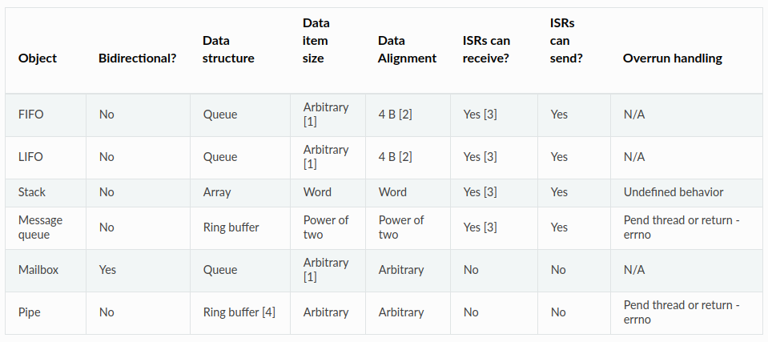
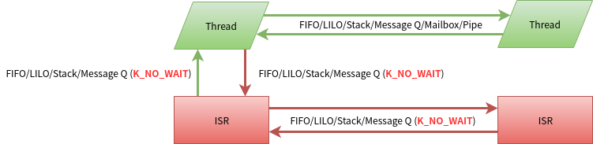

数据传递¶
Zephyr OS内核提供6种内核对象用于在Thread/ISR之间传递数据，分别是:
FIFO: 先进先出
LIFO: 后进先出
Stack: 堆栈
Message Queue： 消息队列
MailBox：邮箱
Pipe：管道
官方文档中列出了一个表，和清晰的说明这6种内核对象的特性

内核对象特性¶
FIFO/LIFO¶
FIFO使用queue实现，因此FIFO内保存的数据是离散的，不需要占用连续的物理内存。 发送数据插入在queue list的尾部，从queue list头部接收数据而达到先进先出的目的。 LIFO也使用queue实现，但是是在queue list的尾部插入数据和读取数据，因此是后进先出。LIFO的其它特性和FIFO一样 FIFO/LIFO传递的数据，并不是将所有数据放入FIFO/LIFO，而是传递指向数据的指针。因此传递的数据可以是任意大小。 可以在ISR中put FIFO/LIFO. 也可在ISR内get FIFO/LIFO，但不能等待。 FIFO/LIFO不限制数据项的多少. 线程get FIFO/LIFO后，数据项从FIFO/LIFO中删除，如果FIFO/LIFO为空，线程可进行等待。 允许多个线程等待同一个FIFO/LIFO，当FIFO/LIFO有数据时会分配给等待时间最长的最高优先级线程。
Stack¶
既然有了LIFO为什么还要Stack呢, lifo是将离散的内容通过lifo串接起来已后进先出的方式管理，没有数量的限制。Stack是将一片连续的内存空间已后进先出的方式管理，在初始化的时候就进行了数量限制。 可以在ISR中push stack。 也可在ISR内pop stack，但不能等待。 stack有大小限制，满了后无法push入数据，之后的行为有stack使用者控制，内核自己不可预期。 允许多个线程等待同一个STACK，当STACK有数据时会分配给等待时间最长的最高优先级线程。
Message Queue¶
Message Queue初始化时已经定义了每个Q message大小，和message的总数量，一个message queue对应一个ring buffer 收发的message都放在ring buffer中。ring buffer必须按N对齐，N是2的幂，message的大小必须是N的倍数。 message可以通过线程或ISR发送到消息队列。发送message就是将message放入ring buffer, 如果ring buffer满了，线程内可以等待发送，但ISR中发送不能等待。 多个thread可以向同一个message queue发送message，当ring buffer满时，所有thread都发生等待，当有ring buffer有空间时，会让等待时间最长的最高优先级线程发送message。 接收message类似于发送，允许多个thread从同一个message queue接收message，当ring buffer空时，所有的thread都会等待，当ring buffer有数据时，会让等待时间最长的最高优先级线程先获得message. ISR也可以接收message，但不能等待。 线程也可以peek消息队列顶部的消息，peek不会删除ring buffer中的消息。
MailBox¶
邮箱只允许线程间交换邮件，ISR不能使用邮箱 每个邮件只能由一个线程接收，不支持点对多点或者广播。 邮件收发线程相互知道对方，不是匿名传递。 邮箱消息包含零个或多个字节的消息数据。消息数据的大小和格式是由应用程序定义的，每条消息的格式都可以不同。 邮件数据的有两种形式存放： 1. 消息缓冲区由发送或接收消息的线程提供的内存区域。例如数组或结构变量。 2. 是消息块是从内存池分配的内存区域。
如果一条消息没有消息缓冲区和消息块，称为空消息。消息缓冲区或内存块存在但包含零字节实际数据的消息不是空消息。 发送线程创建一条消息将其发送给邮箱时，该邮件归邮箱所有，直到将其提供给接收线程为止。 发送线程可以将邮件发给指定线程，也可以用K_ANY将其发送给任意线程。接收线程也从指定线程接收邮件指定线程，也可以用K_ANY接收任意线程的邮件。 邮箱可以同步发送：发送阻塞，直到接收线程接收到消息，这是有一个隐性的流控制机制：在接收线程未处理完全，发送线程是阻塞的。 异步发送：发送不阻塞，需要邮箱的用户显示的进行流控制。
管道¶
管道用于两个线程之间流式传递数据，可以同步也可以异步。ISR不能使用PIPE。 如果指定了pipe的size，说明pipe是有ring buffer的，如果未指定pipe不使用ring buffer。如果有ring buffer，pipe发送数据没发送完的部分会放入到ring buffer中。 同步发送时，线程可以通过管道发送全部或者部分数据，管道会尝试尝试尽可能多的发送数据，但如果不能立即满足要发送的最小长度，该发送会失败。接收的数据被复制到ring buffer中或者直接被pipe的读取者读走。
使用限制¶
下图说明了数据传递内核对象的使用限制，绿色的线的常规做法，红色的线的做法虽然允许，但不建议使用。

这里提前说一下为什么会有这些限制： ISR里面不能等待，是因为ISR本身有时间处理的要来，另外这些对象的等待都是依赖thread wait_q实现，ISR不会支持 ISR不能使用mailbox/pipe，因为mailbox和pipe都是依赖thread的swap_data来交换数据，ISR不会支持。不过异步传输是否可用于ISR值得研究。参考¶
https://docs.zephyrproject.org/latest/reference/kernel/index.html